No painting yet
Load a photo of your painting, or use the one on the Studio tab. You can also drop or paste a photo while this drawer is open.
- Light and dark score
- 0
- Shapes in the right place
- 0%
Color score: how close your colors are to the reference, shape by shape. Light and dark score: how close your lights and darks are, ignoring color. Shapes in the right place: how much of your picture lands in the same dark, middle or light area.
Show the details
Each shape in the reference's color blocks is compared with your painting over the same pixels, using the CIEDE2000 color difference (ΔE). A shape scores 100 − 2.5 × ΔE, weighted by its area. The light-and-dark score uses lightness only: 100 − 5 × |ΔL*|.
What to fix first
Each shape shows how close your color is: 100% is a perfect match. The white labels are the biggest differences, numbered as in the list. Hover or tap a shape to compare the two colors.
1 of 8
Brushes
A flat tip at a fixed angle: thick one way, thin the other.
Light is pale and fine; Dark builds up fast. Press harder with a pen for more.
The underdrawing sits on its own layer under the paint. Paint over it freely: it never mixes in.
Color Lead HardnessDraws the grid, lines, measures and plumb lines from the Study tab on this layer in pencil, with the lead, hardness, size and color set here, fitted to the paper as the reference would be.
Drags the paint already on the paper to soften edges. Adds no paint of its own.
Canvas
GroundRaw canvas: pale and warm. The painting stays as it is when the ground changes.
The ground, underdrawing, paint and texture in one picture.
Reference
The reference from the Study tab, with its studies as that tab makes them.
Values shows dark, middle and light. Blocks shows the big color shapes. Both come from the Study tab.
Eraser
Zoom and pan
Zoom in for detail; pan slides the paper under the brush.
Paints
Mixing well
Empty. Tap a paint to start a mix.
Paint by numbers
Your picture becomes a numbered puzzle. Pick a number, then tap paints to mix its color. Every tap adds one part. Match the colors, then lock in your portrait for a score.
Slide to the value you see in the reference: black at the left, white at the right. Every shape with this number takes it.
Tap a paint to add it; hold to keep adding. Use small amounts for a touch of a strong paint, large ones for a pile of white. Every shape with the same number takes the same mix. On a phone, drag the reference to move it.
Portrait locked in
0%
color match
New best!
Analysis
0 points
Number by number, furthest off first
Value battle
Colors mixed from the same palette. Which is darker, lighter, cooler or warmer? With three or four, find the darkest, the lightest, or put them all in order. Every round is a little harder than the last. How long can your streak go?
Both colors are mixed from these paints.
What you are looking at
Value is how light or dark a color is, with the color ignored. Squint and the darker one goes darker first.
Temperature is which way a color leans: toward orange and yellow is warm, toward blue is cool. A gray-green can be cooler than a pink that is just as dark.
Some rounds are a tie. "Both the same" is a real answer, not a trick.
The first rounds are easy. Each one after is a little closer, until the colors are a hair apart. One miss ends the streak.
Which color is darker in value?
Streak over
0
in a row
New best!
Tap the swatches to answer.
How to use Portrait Value Studio
Everything here runs in your browser. Your photos and paintings stay on your device. Here is the whole app, one part at a time, with pictures from a phone.
- Load a photo. Or keep the sample portrait.
- Look at the shapes. See where the darks, middles and lights are, and which big colors there are.
- Paint it in the Studio. Copy the lines, mix the colors, paint.
- Check how close you got. Score your painting shape by shape.
Getting around
- Simple or Advanced. Simple shows only what you need. Advanced shows every setting. Start with Simple.
- Load photo puts your own portrait in. A photo of a friend, straight on, in good light, works best.
- The three big buttons are the sections. Learning tools opens a menu with Study the photo, the Loomis head and this guide. Studio is the paper to paint on. Games opens a menu with Paint by numbers and Value battle, and more games to come.
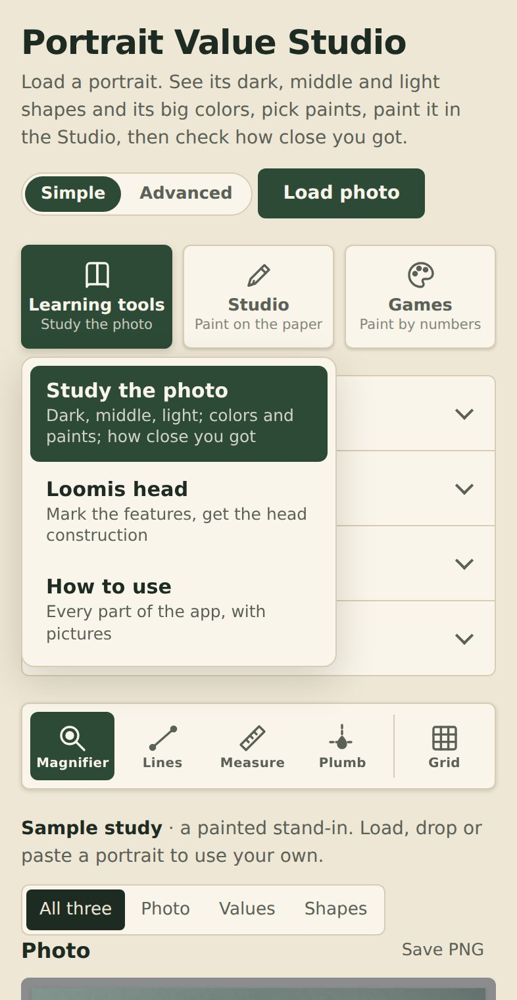
Study the photo
The app makes two pictures from the photo.
- Dark, middle, light turns the photo into three grays. Paint these three shapes first and a portrait already looks right.
- Big color shapes splits each gray into a few colors that are really in the photo.
- Use All three / Photo / Values / Shapes to see one picture big. Save PNG keeps a picture on your device.
- In Dark, middle, light, the Detail switch chooses how much to simplify. Soft keeps only the big shapes.
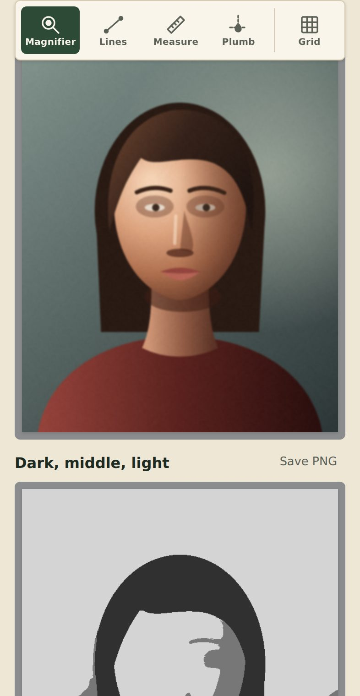
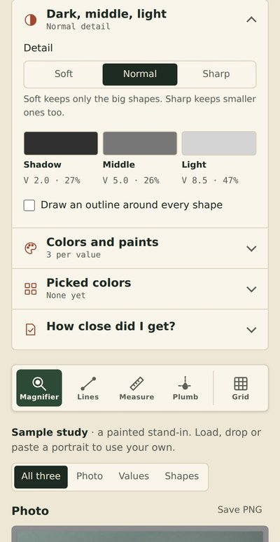
Drawing tools
The row of tool buttons works on every picture. Tap a tool to use it. Tap it again to turn it off, so touching a picture just scrolls.
- Magnifier shows the color under your finger. Tap to keep it in Picked colors.
- Lines draws straight lines, like a line through both eyes. They show on all three pictures.
- Measure compares lengths. Make one line the unit, and every other line says how many units it is.
- Plumb drops a straight-down line and a level line through a point, to see what lines up.
- Grid lays a 3 × 3 or 4 × 4 grid over the picture, for drawing it square by square.
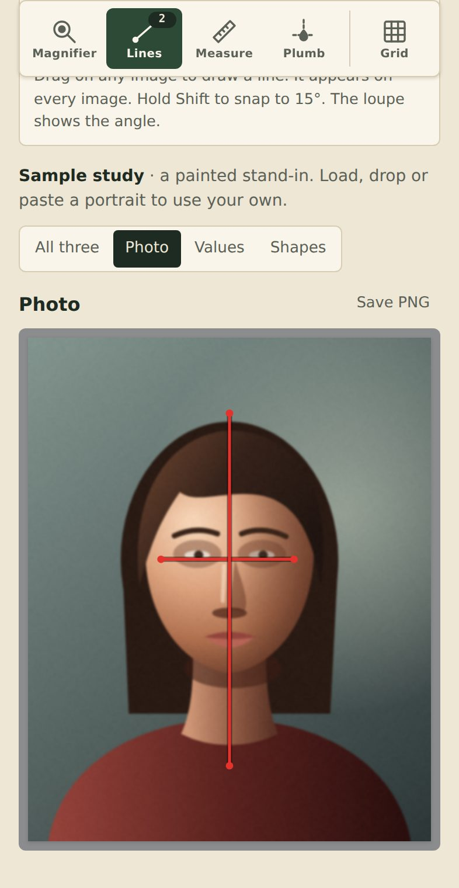
Loomis head
Artists start a head with a ball and a few lines, the way Andrew Loomis taught. This tab fits that construction over any face so you can see where the lines go, then draw them yourself.
- The card names one feature at a time: each eye, each eyebrow, the nose, the mouth, the chin and the forehead. Tap it on the photo. A loupe shows the spot magnified, so drag until it is exact, then press Lock in. Eyebrows and forehead can be skipped.
- After the last one the head appears: the ball (red), the flat side, the centre line and brow line (blue), and the eye, nose, mouth and chin lines (yellow). Lines on the far side of the head are faint and dashed.
- To adjust it, drag: a dot moves that mark; the centre line turns the head; the brow or eye line nods it; the nose, mouth or chin line changes the face length; the ball's edge sizes it; anywhere else inside moves it. The arrows around the ball turn, nod and tilt it a little at a time. Hold one to keep going.
- Then draw it on your paper in order, or press Draw it in the Studio to get it in pencil on the Studio's underdrawing.
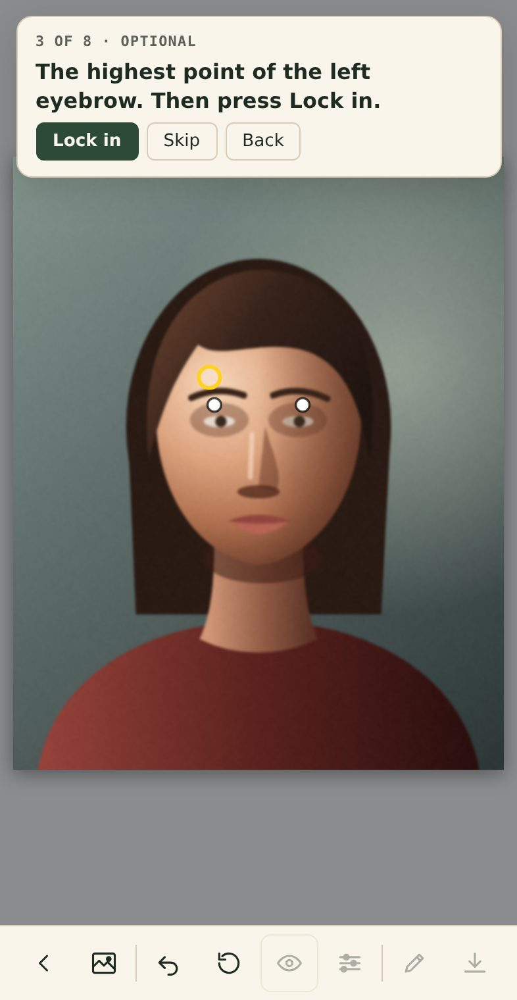
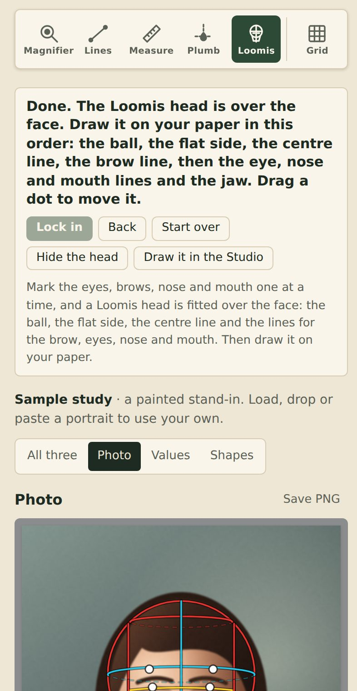
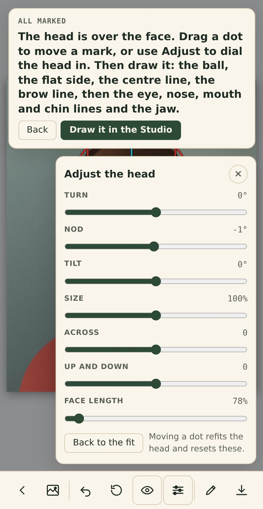
Colors and paints
- Colors in each value sets how many colors each of the three grays is split into. Three is a good start.
- Paints to use lists palettes, best match first. Each one is a small set of real paints.
- Tap a palette to see a recipe for every color: which paints, and how many parts of each.
- The Photo / palette switch above the big color shapes shows the picture as your paints would mix it.
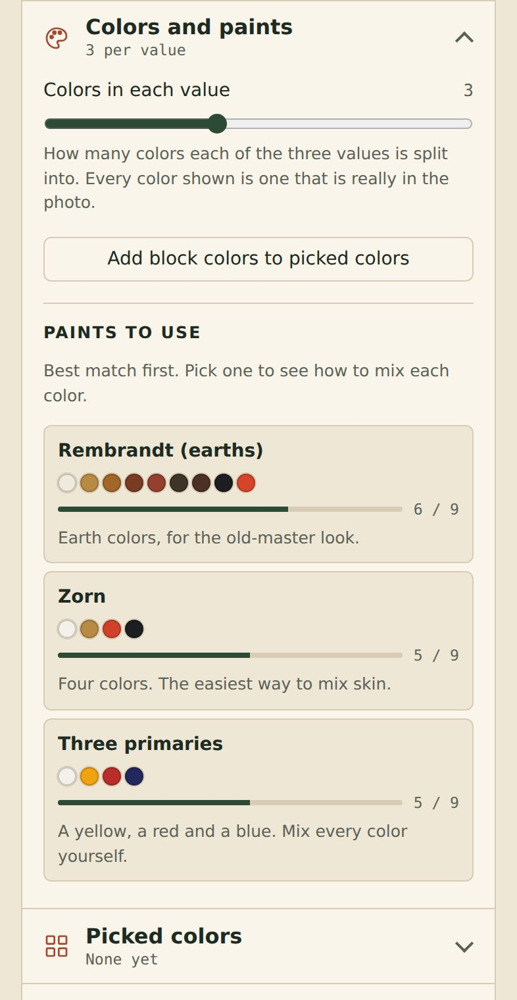
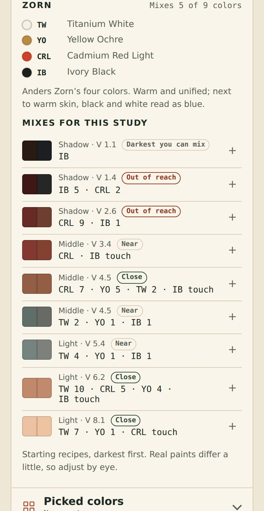
Studio
A paper to paint on. The row of icons at the bottom holds every tool. Tap an icon to open its sheet. Tap the paper to close it.
- Brushes: the chisel, the round brush, the pencil, the underdrawing pencil and the blend brush. The underdrawing goes on its own layer under the paint. Copy the Study lines draws your lines from the Study tab onto it.
- Paints: tap paints to put parts into the mixing well. Lock in keeps the mix. Tap a kept mix to paint with it. The first eight are skin tones mixed from your palette.
- Reference: the photo floats over the paper. Drag it anywhere. Show it as the photo, the values or the shapes.
- Canvas: a raw, toned or gray ground, a linen or paper texture, and Save as PNG.
- Then zoom, undo, turn the paper and clear. Clearing takes two taps, and Undo brings the paper back. Your painting is saved on its own and is there when you come back.
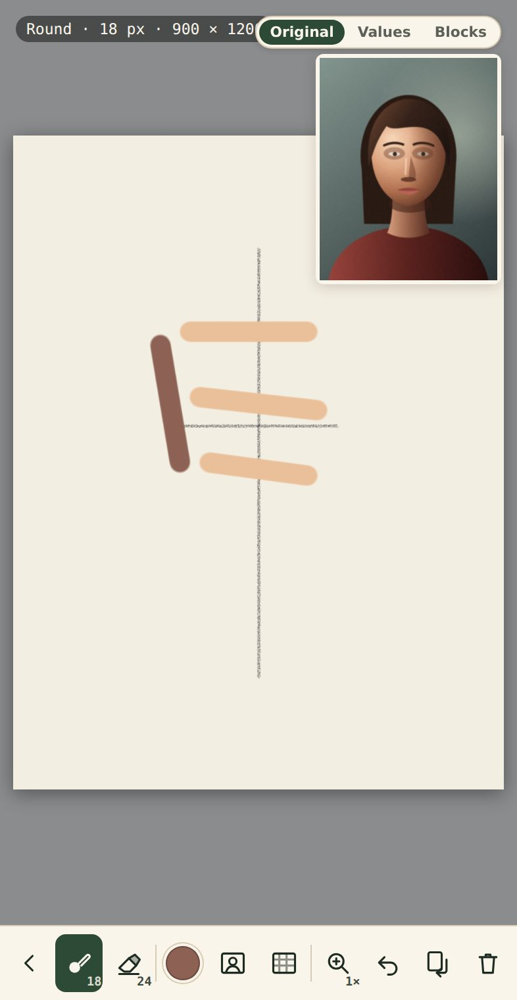
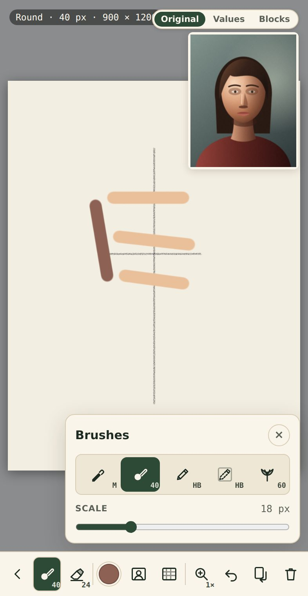
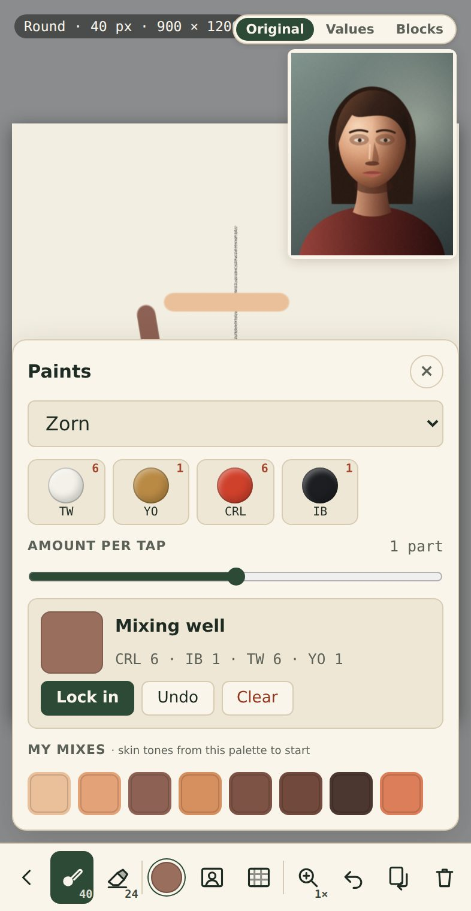
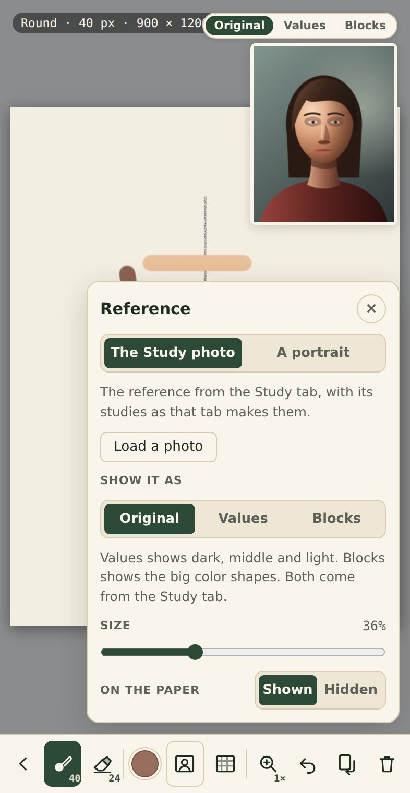
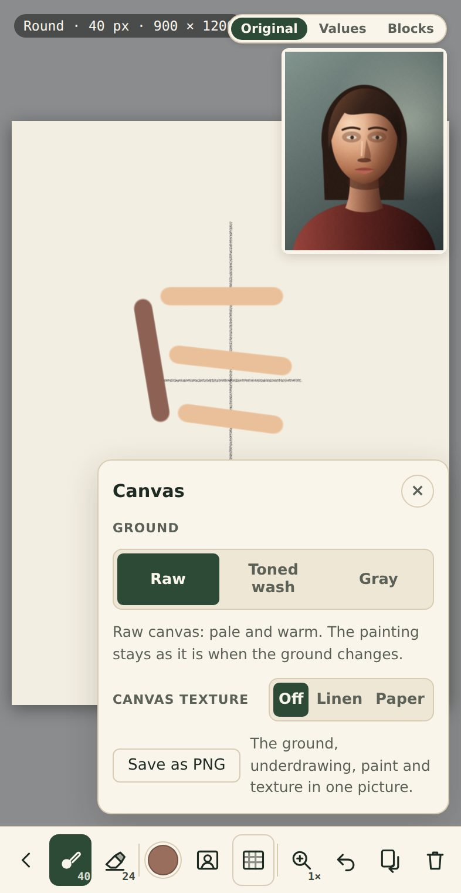
How close did I get?
Open the last drawer on the Study tab to score a painting against the photo.
- Load a photo of my painting, or Use my Studio painting.
- If the photo is crooked, open Line up the photo and slide it until it matches. Fix color cast takes out a yellow or blue tint from the room's light.
- The Color score says how close your colors are. The light and dark score ignores color and looks only at light and dark.
- What to fix first lists the biggest differences, with plain notes like "too light, too warm".
- The last picture shows every shape with its own score. White labels are the ones to fix first.
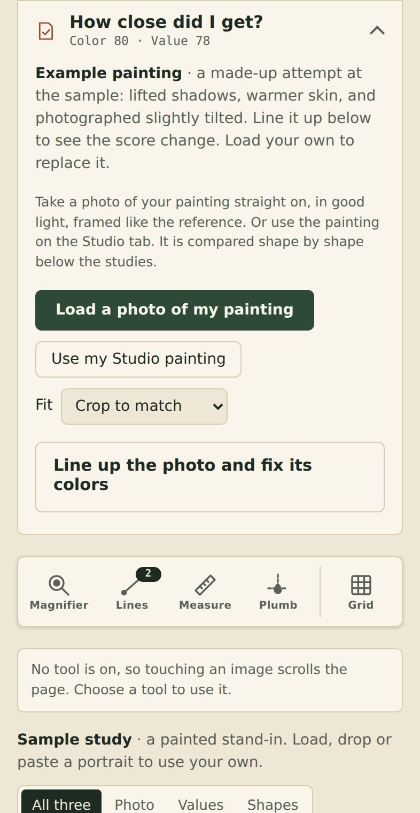
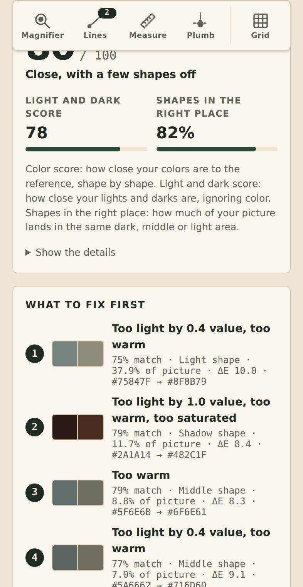
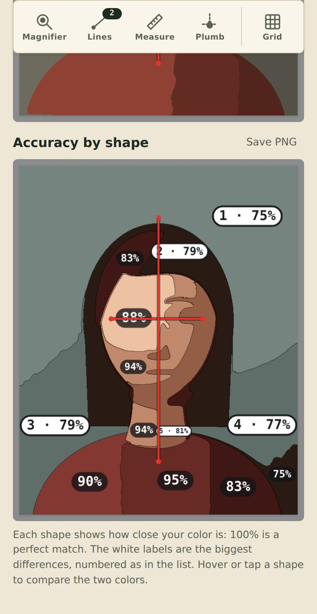
Paint by numbers
- Choose a photo or a painting, a palette, a level and a mode. Relaxed has no timer. Then Start painting.
- Tap a number, then tap paints to mix its color. Every tap adds one part. Every shape with that number fills with your mix.
- The chip shows your mix. When it is spot on, it chimes. Next jumps to the next unpainted number.
- Lock in portrait ends the game and shows your score and stars. Analyze shows which numbers were off and the recipe that would have matched.
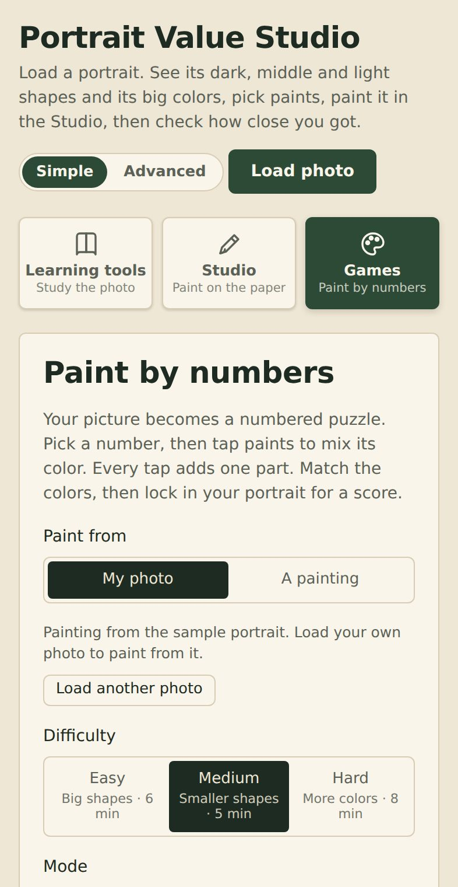
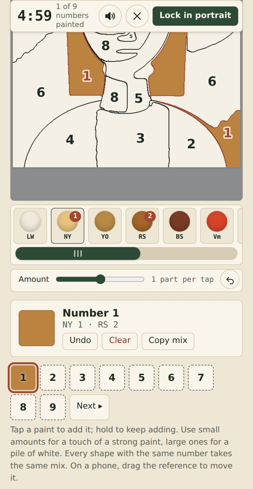
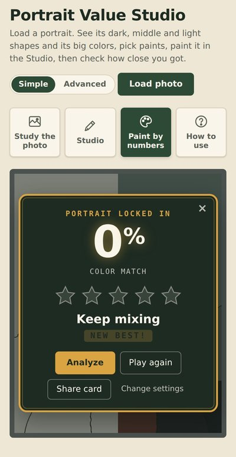
Value battle
- Pick a palette and how many colors a round has, then Start the battle. Every color is mixed from that palette.
- With two colors, a question asks which is darker, lighter, cooler or warmer. Tap Left, Right or Both the same, or tap a swatch.
- With three or four, answer on the swatches: tap the darkest or the lightest, or tap them in order from darkest to lightest. Choose how many colors on the setup, or Mix for all three.
- The answer explains itself: the values on the 0 to 10 scale, or which way each color leans. Then Next.
- The rounds keep coming, each a little harder, and your streak counts up in the bar. One miss ends it: the streak pops up with stars, and your best for that palette and color count is kept.
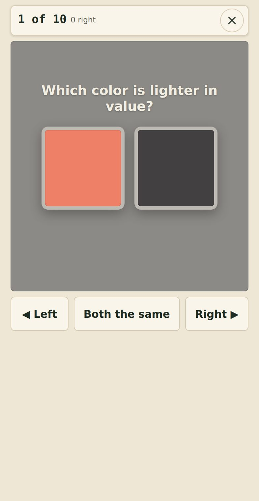
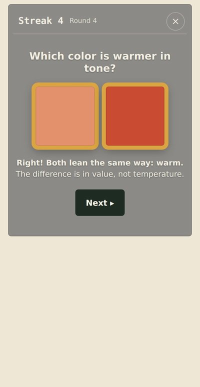
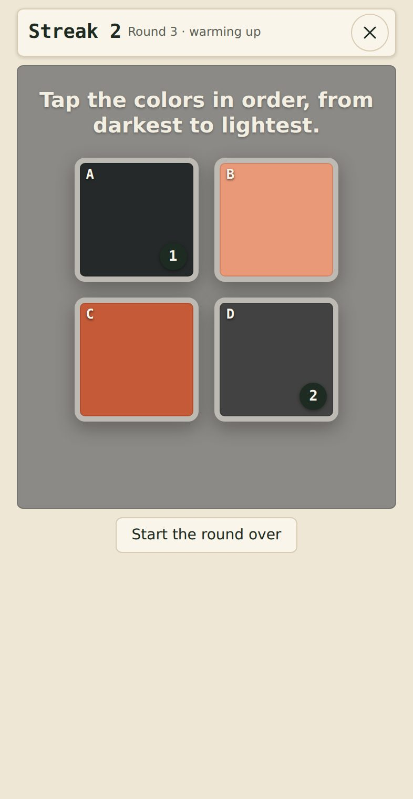
Good to know
- Nothing is uploaded. Photos, paintings and scores stay in this browser.
- The Studio saves your painting as you go. Close the tab, come back later, and it is still there.
- Undo is everywhere: on the Studio strip, in the mixing well, and under the game's paints.
- On a phone, the tabs hide while you paint or play. The arrow at the left of the Studio strip, or ✕ twice in a game, brings them back.
- Stuck? Switch to Simple at the top of the page, and start again with the sample portrait.